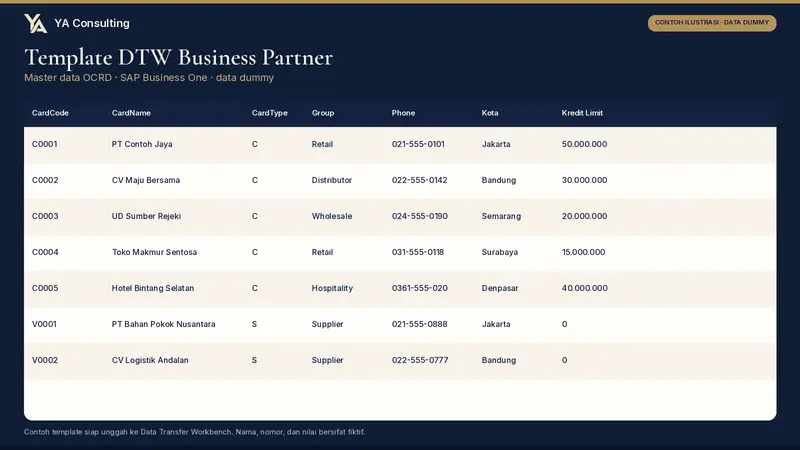
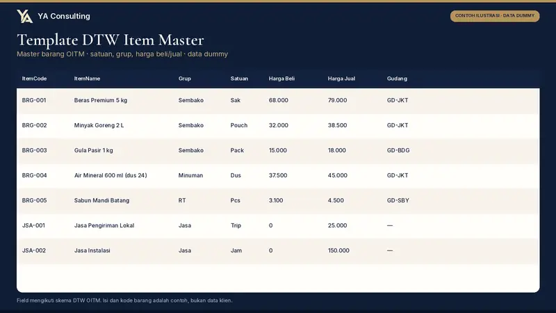
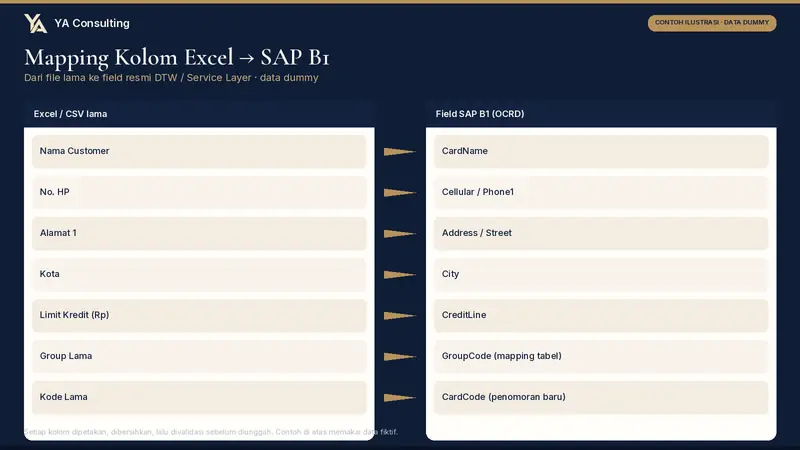
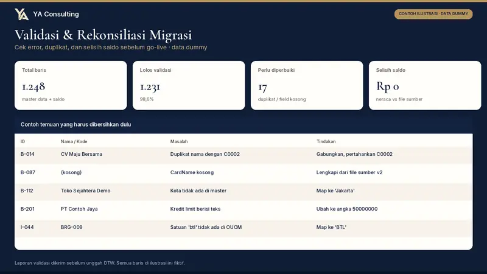
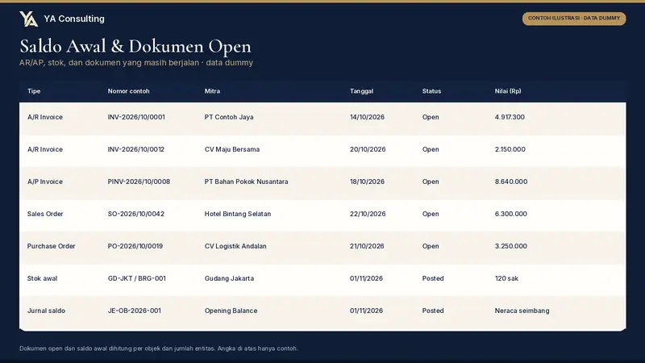
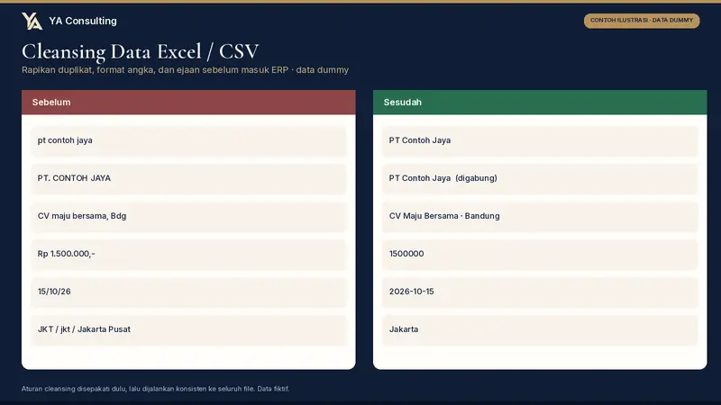
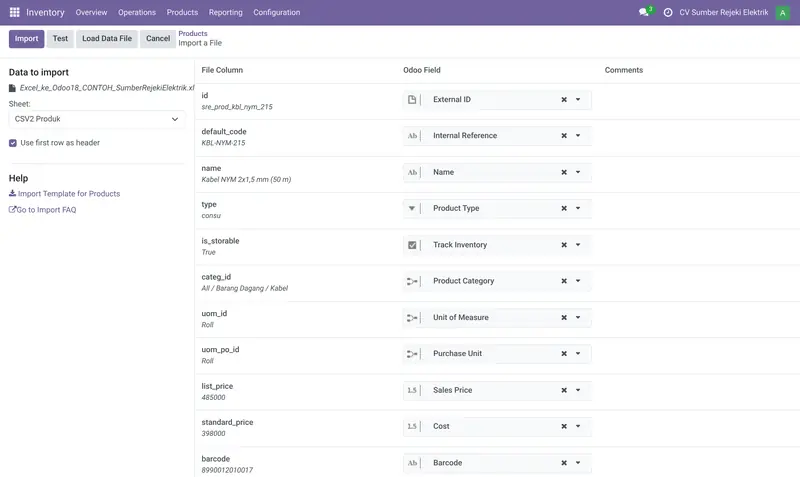

Jasa & Layanan
Jasa Migrasi Data SAP Business One via DTW & Olah Data ke Excel
Migrasi master data, saldo awal, dan dokumen open ke SAP B1, lengkap dengan cleansing dan rekonsiliasi.
Mulai Rp3.000.000 · harga final sesuai ruang lingkup
Ringkasan
Migrasi master data, saldo awal, dan dokumen open ke SAP B1, lengkap dengan cleansing dan rekonsiliasi. Semua angka di halaman ini adalah harga mulai; saya kunci harga final di penawaran tertulis setelah scope jelas.
Fitur yang Anda dapat
- Cleansing data sumber: duplikat, ejaan, format angka, dan kode yang tidak konsisten
- Mapping kolom Excel/CSV atau sistem lama ke field resmi DTW SAP B1
- Template DTW untuk business partner, item, gudang, dan master lain
- Saldo awal stok, piutang, hutang, dan jurnal opening yang seimbang
- Dokumen open (SO, PO, invoice) sesuai yang masih berjalan
- Validasi sebelum unggah: field wajib, referensi, dan laporan temuan
- Rekonsiliasi setelah unggah: jumlah baris, nilai, dan contoh dokumen
- Dokumentasi mapping agar migrasi bisa diulang di company atau cabang lain
Contoh layar
Klik gambar untuk memperbesar. Layar memakai data demo atau ilustrasi berlabel data dummy — bukan data klien.


Contoh template DTW Business Partner (OCRD) dengan data dummy.

Contoh template DTW Item Master (OITM) dengan data dummy.

Mapping kolom Excel lama ke field SAP B1 (ilustrasi, data dummy).

Laporan validasi: baris lolos, temuan, dan tindakan perbaikan (data dummy).

Contoh saldo awal dan dokumen open yang ikut dimigrasi (data dummy).

Cleansing data: format nama, angka, tanggal, dan kota dirapikan (data dummy).

Contoh pemetaan kolom file ke field sistem saat import (database contoh). Ringkasan jasa migrasi SAP B1: DTW, Excel, dan rekonsiliasi.
Ringkasan jasa migrasi SAP B1: DTW, Excel, dan rekonsiliasi.
Paket & harga
Master data
mulai Rp3.000.000Business partner, item, dan master lain, sudah dibersihkan dan dimapping.
Master data + saldo awal & dokumen open
mulai Rp5.000.000Termasuk opening balance dan dokumen yang masih berjalan.
Harga dihitung dari jumlah objek dan entitas (berapa jenis master, berapa baris, seberapa rumit cleansing-nya). Angka di atas adalah harga mulai.
Skema kerja
Pertanyaan singkat
Apakah harga di halaman ini sudah final?
Belum. Angka di situs adalah harga mulai. Harga final saya kirim lewat penawaran tertulis setelah ruang lingkup (scope) disepakati.
Bagaimana cara mulai?
Cukup DM saya di Threads untuk konsultasi gratis. Setelah kebutuhan jelas, saya buatkan ringkasan scope dan penawaran tertulis.
Apa yang termasuk support 3 bulan?
Perbaikan bug dari pekerjaan yang sudah diserahkan, pertanyaan pemakaian, dan penyesuaian kecil. Perubahan lingkup baru dihitung terpisah.
Apakah ada biaya langganan bulanan?
Untuk pengerjaan jasa, tidak ada biaya langganan. Support ringan 3 bulan sudah termasuk. Maintenance tahunan bersifat opsional, sekitar 15–20% per tahun. Untuk aplikasi custom, biaya hosting dihitung terpisah jika Anda ingin saya yang kelola.
Apakah saya harus punya Data Transfer Workbench?
Ya, DTW adalah tools resmi SAP B1. Saya siapkan templatenya dan dampingi proses unggahnya. Kalau ada objek yang lebih cocok lewat Service Layer, itu bisa dibicarakan.
Mau bahas kebutuhan Anda?
Konsultasi gratis. Cukup DM saya di Threads. Saya balas dengan pertanyaan ringkas, lalu penawaran tertulis bila lingkupnya sudah jelas.
DM @yohanesandy.erp